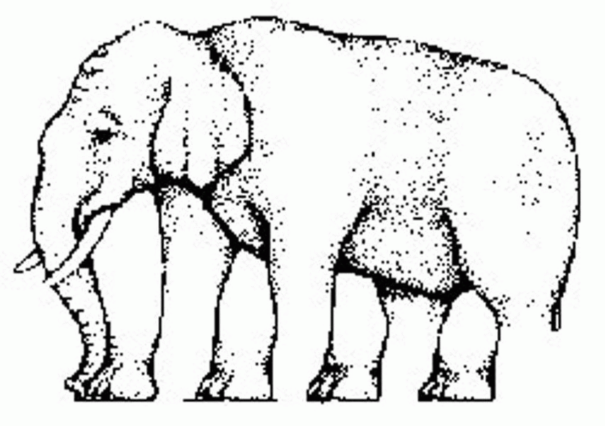

Hopf Vibrations
2015-2017
The Hopf fibration is a very special mathematical object relating the 1, 2, and 3 dimensional spheres. Precisely, it is a decomposition of the 3-sphere, that is, 3-dimensional space with a point at infinity, into a disjoint union of 1-spheres, that is, circles, such that each circle may be labelled by a coordinate on the 2-sphere, that is, the ordinary sphere. It has the additional special property that every pair of circles forms a simple link.
A deep theorem seen from many angles but which there always seems to be something missing.
A deep theorem surrounding a phenomenon known as Bott periodicity says something like this exists only in 1, 3, 7, and 15 dimensions. Bott periodicity and the Hopf fibration appear everywhere, even in condensed matter physics!
Stereographic projection from the sphere to the plane (and back).
This three.js project was my very first, and I couldn't have done it without my buddy data-doge (Eugene Lynch) who is responsible for getting me into this crazy stuff! Also the CCRMA deserves a shoutout, where we cranked out a lot of this stuff.
Anyway, the piece consists of a sketchpad in the lower right, which represents a stereographic projection of the 2-sphere which parametrizes the circles. If you click in the sketchpad, this represents a point on the 2-sphere and the computer draws the corresponding circle. Try just a few clicks at first. Drag the image to see that the resulting circles are all linked in pairs. Then draw more points. There are some interesting ``features" to be explored in the menu.
One can also toggle fly-controls by an option on the sketchpad:
- w,a,s,d lateral movement
- q,e roll
- r,f vertical movement
- ↑ ↓ ← → pitch and yaw
The code for this project is available on github.